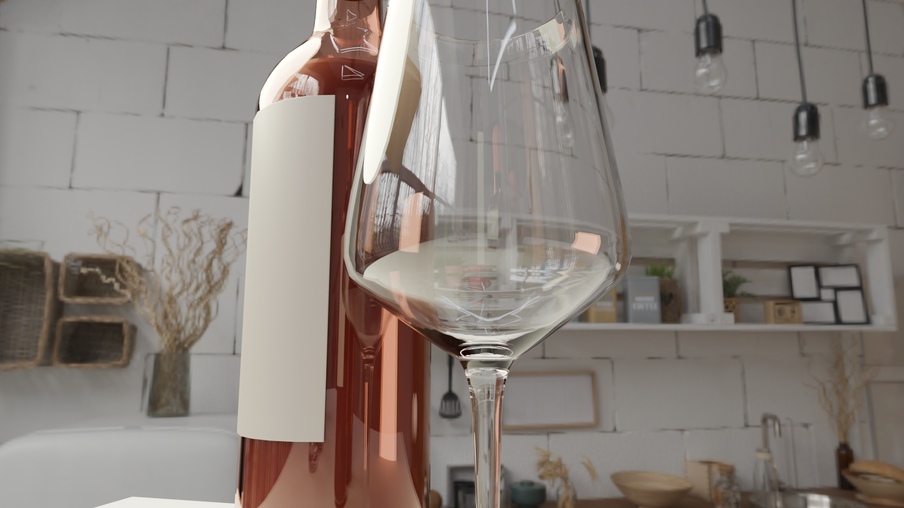
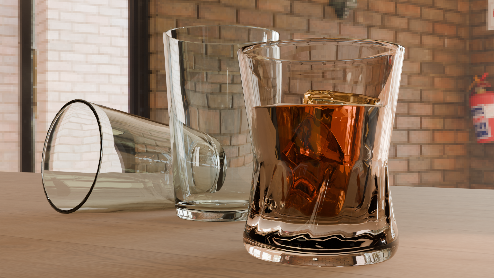
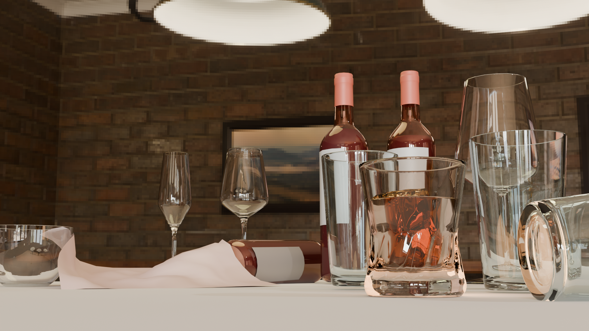
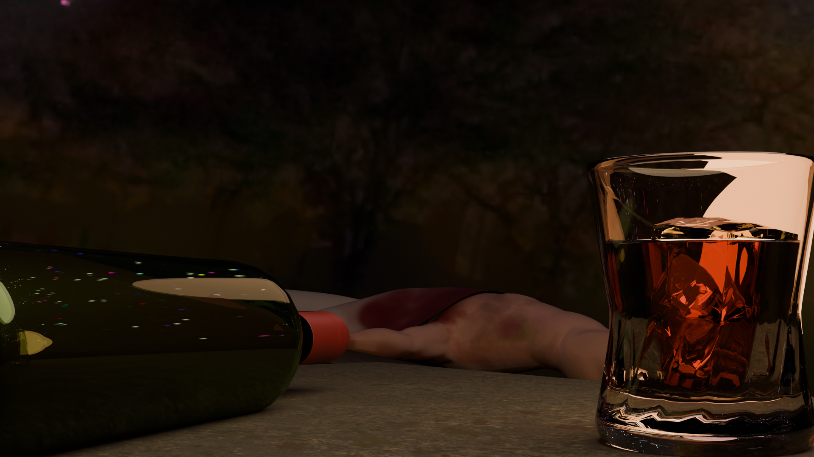
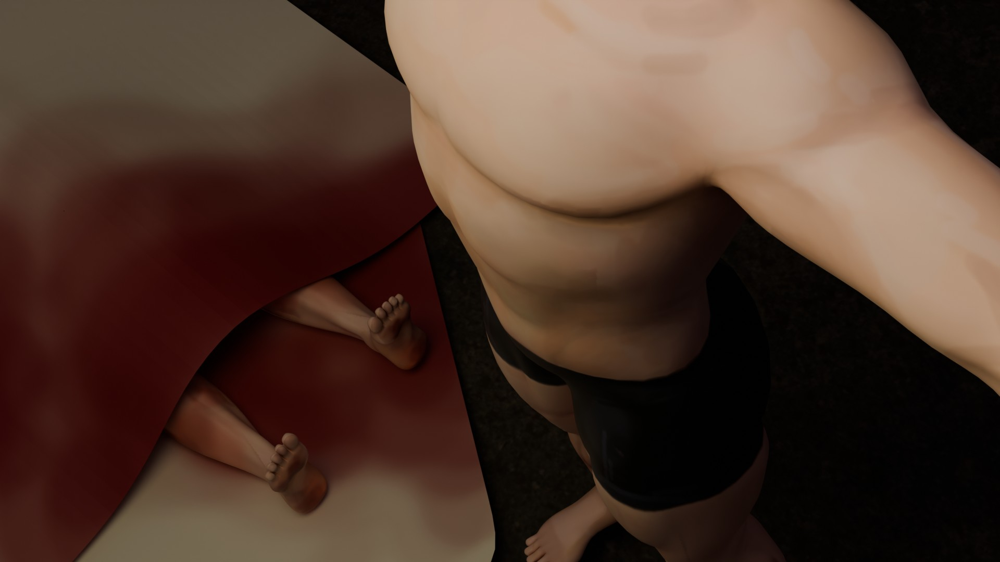
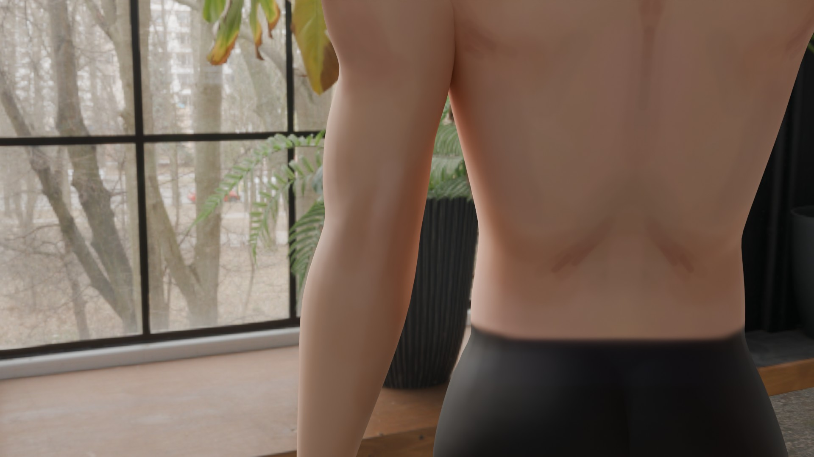
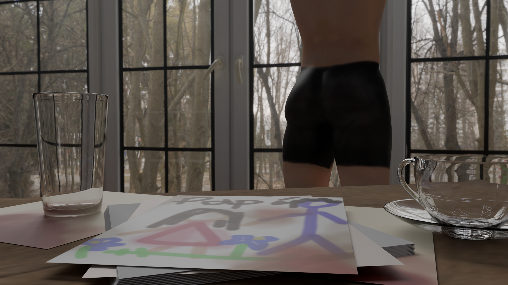
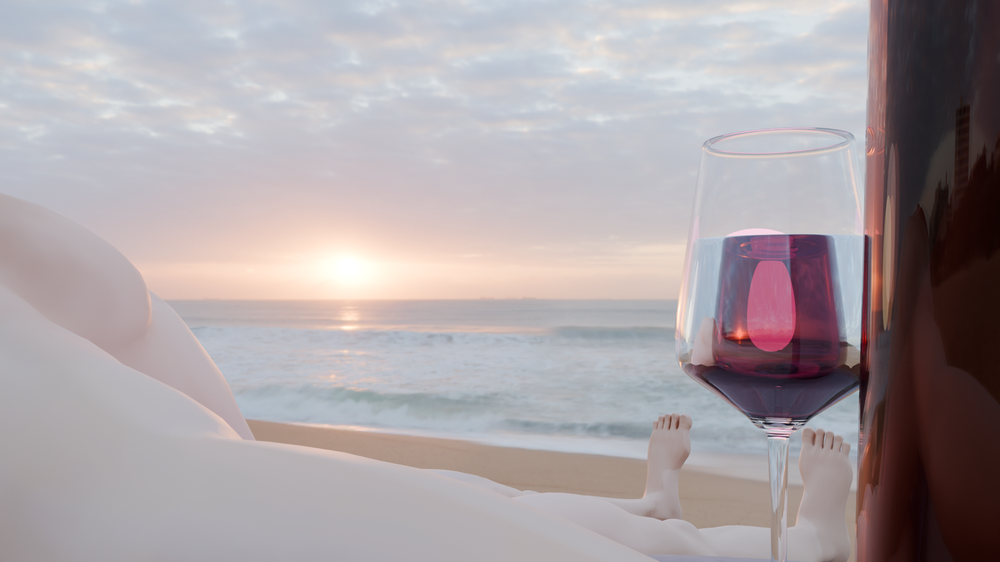

gcanopaulina@gmail.com



Renders de objetos organicos varios realizados en Blender. Proyecto individual de modelado, retropologia, texturizado y renderizado organico. Se muestran en bajo, medio y alto poligonaje. Se utilizó el motor de render Cycles para obtener un resultado más realista.
Proyecto evaluado para la Expo LMAD 2025.




